Introduction¶
Understanding heat transport in semiconductors and insulators is of fundamental importance because of its technological impact in electronics and renewable energy harvesting and conversion. Anharmonic Lattice Dynamics provides a powerful framework for the description of heat transport at the nanoscale. One of the advantages of this method is that it naturally includes quantum effects due to atoms vibrations, which are needed to compute thermal properties of semiconductors widely use in nanotechnology, like Silicon and Carbon, even at room temperature. While heat transport in amorphous and crystalline semiconductors has a different microscopic origin, a unified approach to simulate both crystals and glasses has been devised. Here we introduce a unified workflow, which implements both the Boltzmann Transport equation (BTE) and the Quasi Harmonic Green-Kubo (QHGK) methods. We discuss how the theory can be optimized to exploit modern parallel architectures, and how it is implemented in kALDo: a versatile and scalable open-source software to compute phonon transport in solids.
Theory¶
In semiconductors, electronic and vibrational dynamics often occur over different time scales, and can thus be decoupled using the Born Oppenheimer approximation. Under this assumption, the potential  of a system made of 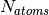 atoms, is a function of all the 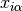 atomic positions, where
of a system made of 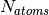 atoms, is a function of all the 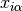 atomic positions, where  and
and  refer to the atomic and Cartesian indices, respectively. Near thermal equilibrium, the potential energy can be Taylor expanded in the atomic
displacements, 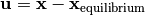,
refer to the atomic and Cartesian indices, respectively. Near thermal equilibrium, the potential energy can be Taylor expanded in the atomic
displacements, 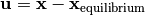,
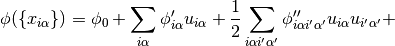
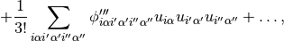
where
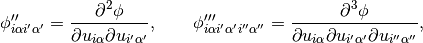
are the second and third order interatomic force constants (IFC). The term 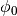 can be discarded, and the forces 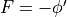 are zero at equilibrium.
The IFCs can be evaluated by finite difference, which consists in calculating the difference between the forces acting on the system when one of the atoms is displaced by a small finite shift along a Cartesian direction. The second and third order IFCs need respectively, 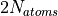, and 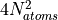 forces calculations. In crystals, this amount can be reduced exploiting the spatial symmetries of the system, or adopting a compressed sensing approach. In the framework of DFT, it is also possible and often convenient to compute IFCs using perturbation theory.
The dynamical matrix is the second order IFC rescaled by the masses, 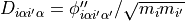. It is diagonal in the phonons basis
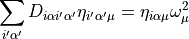
and 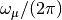 are the frequencies of the normal modes of the system.
For crystals, where there is long range order due to the periodicity, the dimensionality of the problem can be reduced. The Fourier transfom maps the large direct space onto a compact volume in the reciprocal space: the Brillouin zone. More precisely we adopt a supercell approach, where we calculate the dynamical matrix on 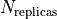 replicas of a unit cell of 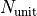 atoms, at positions 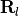, and calculate
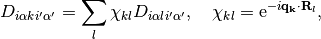
where  is a grid of size 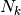 indexed by
is a grid of size 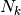 indexed by  and the eigenvalue equation becomes
and the eigenvalue equation becomes
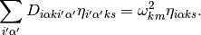
which now depends on the quasi-momentum index, , and the phonons mode  .
.
Boltzman Transport Equation¶
At finite temperature  , the Bose Einstein statistic is the quantum distribution for atomic vibrations
, the Bose Einstein statistic is the quantum distribution for atomic vibrations
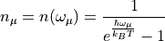
where 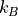 is the Boltzmann constant and we use 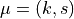.
We consider a small temperature gradient applied along the -axis of a crystalline material. If the phonons population depends on the position only through the temperature, 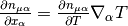, we can Taylor expand it
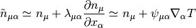
with 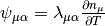, where 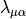 is the phonons mean free path. Being quantum quasi-particles, phonons have a well-defined group velocity, which, for the acoustic modes in the long wavelength limit, corresponds to the speed of sound in the material,
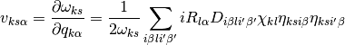
and the last equality is obtained by applying the derivative with respect to 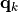 directly to tbe eigenvectors Equation
The heat current per mode is written in terms of the phonon energy 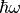, velocity  , and out-of-equilibrium phonons population, 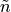:
, and out-of-equilibrium phonons population, 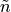:
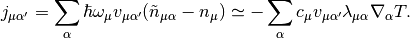
As we deal with extended systems, we can assume heat transport in the diffusive regime, and we can use Fourier’s law
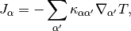
where the heat current is the sum of the contribution from each phonon mode: 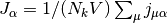. The thermal conductivity then results:
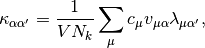
where we defined the heat capacity per mode
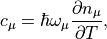
which is connected to total heat capacity through 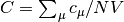.
We can now introduce the BTE, which combines the kinetic theory of gases with collective phonons vibrations:
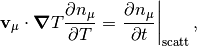
where the scattering term, in the linearized form is
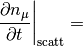
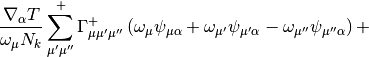
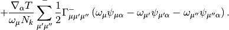
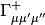 and 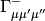 are the scattering rates for three-phonon scattering processes, and they correspond to the events of phonons annihilation 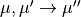 and phonons creation $:nbsphinx-math: rightarrow`:nbsphinx-math:
rightarrow`:nbsphinx-math: ‘,:nbsphinx-math:’’
‘,:nbsphinx-math:’’
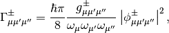
and the projection of the potentials on the phonon modes are given by
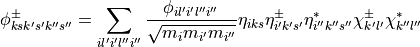
with 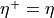, 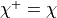 and 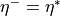, 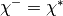. The phase space volume 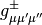 in the previous equation are defined as
and include the  for the conservation of the energy and momentum in three-phonons scattering processes,
for the conservation of the energy and momentum in three-phonons scattering processes,
with  the lattice vectors. Finally, the normalized phase-space per mode , provides useful information about the weight of a specific mode in the anharmonic scattering processes.
the lattice vectors. Finally, the normalized phase-space per mode , provides useful information about the weight of a specific mode in the anharmonic scattering processes.
In order to calculate the conductivity, we express the mean free path in terms of the 3-phonon scattering rates
where we introduced
and
In RTA, the off-diagonal terms are ignored, , and the conductivity is
where corresponds the phonons lifetime calculated using the Fermi Golden Rule.
It has been shown that, to correctly capture the physics of phonon transport, especially in highly conductive materials, the off diagonal terms of the scattering rates cannot be disregarded. More generally, the mean free path is calculated inverting the scattering tensor
This inversion operation is computationally expensive; however, when the off-diagonal elements of the scattering rate matrix are much smaller than the diagonal, we can rewrite the mean free path obtained from the BTE as a series:
where in the last step we used the identity , true when . This equation can then be written in an iterative form
Hence, the inversion in of the scattering tensor is obtained by a recursive expression. Once the mean free path is calculated, the conductivity is straightforwardly computed.
Quasi-Harmonic Green Kubo¶
In non-crystalline solids with no long range order, such as glasses, alloys, nano-crystalline, and partially disordered systems, the phonon picture is formally not well-defined. While vibrational modes are still the heat carriers, their mean-free-paths may be so short that the quasi-particle picture of heat carriers breaks down and the BTE is no longer applicable. In glasses heat transport is dominated by a diffusive processes in which delocalized modes with similar frequency transfer energy from one to another. Whereas this mechanism is intrinsically distinct from the underlying hypothesis of the BTE approach, the two transport pictures have been recently reconciled in a unified theory, in which the thermal conductivity is written as:

This expression is analogous to the RTA one, where modal heat capacity, phonon group velocity and lifetimes are replaced by the generalized heat capacity,

the generalized velocities,
and the generalized lifetime . The latter is expressed as a Lorentzian, which weighs diffusive processes between phonons with nearly-resonant frequencies:
where is the line width of mode that can be computed using Fermi Golden rule. These equations have been derived from the Green-Kubo theory of linear response applied to thermal conductivity, by taking a quasi-harmonic approximation of the heat current, from which this approach is named quasi-harmonic Green-Kubo (QHGK). It has been proven that for crystalline materials QHGK is formally equivalent to the BTE in the relaxation time approximation, and that its
classical limit reproduces correctly molecular dynamics simulations for amorphous silicon up to relatively high temperature (600 K). Finally, we provide a microscopic definition of the mode diffusivity,
which conveniently provide a measure of the temperature-independent contribution of each mode to thermal transport.
Benchmarks applications¶
The workflow for ALD calculations is illustrated below

Here, we present two example simulations of both a periodic and an amorphous structure.
Ab initio silicon diamond¶
In this example we calculate the second order IFC using Density Functional Perturbation Theory as implemented in the Quantum-Espresso package. The phonon lifetimes and thermal conductivity calculations are performed using a (19, 19, 19) q-point grid.
The kALDo minimal input file, looks like
# IFCs object creation using ase.build.bulk
fc = ForceConstants(atoms=bulk('Si', 'diamond', a=2.699),
supercell=(5, 5, 5)))
# input is the ASE input for QE
fc.second.calculate(calculator=Espresso(**input))
fc.third.calculate(calculator=Espresso(**input))
# Phonons object creation
phonons = Phonons(force_constants=fc,
kpts=[19, 19, 19],
temperature=300)
# Conductivity calculations
cond = Conductivity(phonons=phonons))
print('Thermal conductivity matrix, in (W/m/K):')
print(cond.conductivity(method='inverse').sum(axis=0))
We performed the simulation using the local density approximation for the exchange and correlation functional and a Bachelet-Hamann-Schluter norm-conserving pseudoptential. Kohn-Sham orbitals are represented on a plane-waves basis set with a cutoff of 20 Ry and (8, 8, 8) k-points mesh. The minimized lattice parameter is 5.398A. The third-order IFC is calculated using finite difference displacement on (5, 5, 5) replicas of the irreducible fcc-unit cell, including up to the 5th nearest neighbor. We obtained the following thermal properties
The silicon diamond modes analysis is shown above. Quantum (red) and classical (blue) results are compared. a) Normalized density of states, b) Normalized phase-space per mode  , c) lifetime per mode
, c) lifetime per mode  , d) mean free path
, d) mean free path  , and e) cumulative conductivity .
, and e) cumulative conductivity .
Amorphous silicon¶
Here we study a-Si generated by LAMMPS molecular dynamics simulations of quenching from the melt a 4096 atom crystal silicon structure, with 1989 Tersoff interatomic potential and the QHGK method. The minimal input file looks like the following
# IFCs object creation
fc = ForceConstants.from_folder(atoms,
folder='./input_data'))
# Phonons object creation
phon = Phonons(force_constants=fc,
temperature=300)
# Conductivity calculations
cond = Conductivity(phonons=phonons))
print('Thermal conductivity matrix, in (W/m/K):')
print(cond.conductivity(method='qhgk').sum(axis=0))
In a simliar treatment to the silicon crystal, a full battery of modal analysis can be calculated with both quantum and classical statistics on the amorphous systems re- turning the phonon DoS as well as the associated lifetimes, generalized diffusivities, normalized phase space and cumulative conductivity

Classical and quantum properties for 4096 atom amorphous silicon system are shown above. a) density of states, b) lifetimes, c) diffusivities, and e) cumulative thermal conductivity. In spite of the increased quantum lifetimes, a decrease of 0.17W/m/K is seen in the quantum conductivity. The difference in conductivity is primarily a result of the overestimation of classical high frequency heat capacities.
References¶
[1]: B. J. Alder, D. M. Gass, and T. E. Wainwright, “Studies in Molecular Dynamics. VIII. The Transport Coefficients for a Hard-Sphere Fluid,” Journal Chemical Physics 53, 3813–3826 (1970).
[2]: A. J. C. Ladd, B. Moran, and W. G. Hoover, “Lattice thermal conductivity: A comparison of molecular dynamics and anharmonic lattice dynamics,” Physical Review B 34, 5058–5064 (1986).
[3]: A. Marcolongo, P. Umari, and S. Baroni, “Microscopic theory and quantum simulation of atomic heat transport,” Nature Physics 12, 80–84 (2015).
[4]: R. Peierls, “Zur kinetischen Theorie der Wärmeleitung in Kristallen,” Annalen der Physik 395, 1055–1101 (1929).
[5]: J. M. Ziman, Electrons and Phonons: The Theory of Transport Phenomena in Solids, International series of monographs on physics (OUP Oxford, 2001).
[6]: A. J. H. McGaughey, A. Jain, and H.-Y. Kim, “Phonon properties and thermal conductivity from first principles, lattice dynamics, and the Boltzmann transport equation,” Journal of Applied Physics 125, 011101–20 (2019).
[7]: M. Omini and A. Sparavigna, “Beyond the isotropic-model approximation in the theory of thermal conductivity,” Physical Review B 53, 9064–9073 (1996).
[8]: A. Ward, D. A. Broido, D. A. Stewart, and G. Deinzer, “Ab initio theory of the lattice thermal conductivity in diamond,” Physical Review B 80, 125203 (2009).
[9]: L. Chaput, A. Togo, I. Tanaka, and G. Hug, “Phonon-phonon interactions in transition metals,” Physical Review B 84, 094302 (2011).
[10]: W. Li, J. Carrete, N. A. Katcho, and N. Mingo, “ShengBTE: A solver of the Boltzmann transport equation for phonons,” Computer Physics Communications 185, 1747–1758 (2014).
[11]: G. Fugallo, M. Lazzeri, L. Paulatto, and F. M. B, “Ab initio variational approach for evaluating lattice thermal conductivity,” Physical Review B 88, 045430 (2013).
[12]: A. Cepellotti and N. Marzari, “Thermal Transport in Crystals as a Kinetic Theory of Relaxons,” Physical Review X 6, 041013–14 (2016).
[13]: A. Chernatynskiy and S. R. Phillpot, “Phonon Transport Simulator (PhonTS),” Computer Physics Communications 192, 196–204 (2015).
[14]: A. Togo, L. Chaput, and I. Tanaka, “Distributions of phonon lifetimes in brillouin zones,” Physical Review B 91, 094306 (2015).
[15]: J. Carrete, B. Vermeersch, A. Katre, A. van Roekeghem, T. Wang, G. K. H. Madsen, and N. Mingo, “almaBTE : A solver of the space–time dependent Boltzmann transport equation for phonons in structured materials,” Computer Physics Communications 220, 351–362 (2017).
[16]: T. Tadano, Y. Gohda, and S. Tsuneyuki, “Anharmonic force constants extracted from first-principles molecular dynamics: applications to heat transfer simulations,” Journal of Physics: Condensed Matter 26, 225402–13 (2014).
[17]: D. A. Broido, M. Malorny, G. Birner, N. Mingo, and D. A. Stewart, “Intrinsic lattice thermal conductivity of semiconductors from first principles,” Applied Physics Letters 91, 231922 (2007).
[18]: L. Lindsay, A. Katre, A. Cepellotti, and N. Mingo, “Perspective on ab initio phonon thermal transport,” Journal Applied Physics 126, 050902–21 (2019).
[19]: L. Lindsay, D. A. Broido, and T. L. Reinecke, “First-Principles Determination of Ultrahigh Thermal Conductivity of Boron Arsenide: A Competitor for Diamond?” Physical Review Letters 111, 025901–5 (2013).
[20]: G. Fugallo, A. Cepellotti, L. Paulatto, M. Lazzeri, N. Marzari, and F. Mauri, “Thermal Conductivity of Graphene and Graphite: Collective Ex- citations and Mean Free Paths,” Nano Letters 14, 6109–6114 (2014).
[21]: A. Cepellotti, G. Fugallo, L. Paulatto, M. Lazzeri, F. Mauri, and N. Marzari, “Phonon hydrodynamics in two-dimensional materials,” Na- ture Communications 6, 6400 (2015).
[22]: A. Jain and A. J. H. Mcgaughey, “Strongly anisotropic in-plane thermal transport in single-layer black phosphorene,” Scientific Reports 5, 8501–5 (2015).
[23]: M. Zeraati, S. M. Vaez Allaei, I. Abdolhosseini Sarsari, M. Pourfath, and D. Donadio, “Highly anisotropic thermal conductivity of arsenene: An ab initio study,” Physical Review B 93, 085424 (2016).
[24]: B. Ouyang, S. Chen, Y. Jing, T. Wei, S. Xiong, and D. Donadio, “Enhanced thermoelectric performance of two dimensional MS2 (M=Mo,W) through phase engineering,” Journal of Materiomics 4, 329–337 (2018).
[25]: S. Chen, A. Sood, E. Pop, K. E. Goodson, and D. Donadio, “Strongly tunable anisotropic thermal transport in MoS 2by strain and lithium inter- calation: first-principles calculations,” 2D Materials 6, 025033–10 (2019). 26A. Sood, F. Xiong, S. Chen, R. Cheaito, F. Lian, M. Asheghi, Y. Cui, D. Donadio, K. E. Goodson, and E. Pop, “Quasi-Ballistic Thermal Transport Across MoS 2Thin Films,” Nano Letters 19, 2434–2442 (2019).
[27]: C. Ott, F. Reiter, M. Baumgartner, M. Pielmeier, A. Vogel, P. Walke, S. Burger, M. Ehrenreich, G. Kieslich, D. Daisenberger, J. Armstrong, U. K. Thakur, P. Kumar, S. Chen, D. Donadio, L. S. Walter, R. T. Weitz, K. Shankar, and T. Nilges, “Flexible and Ultrasoft Inorganic 1D Semiconductor and Heterostructure Systems Based on SnIP,” Advanced Functional Materials 271, 1900233 (2019).
[28]: P. B. Allen and J. L. Feldman, “Thermal conductivity of disordered harmonic solids,” Physical Review B 48, 12581–12588 (1993).
[29]: L. Isaeva, G. Barbalinardo, D. Donadio, and S. Baroni, “Modeling heat transport in crystals and glasses from a unified lattice-dynamical approach,”Nature Communications 10, 3853 (2019).
[30]: M. Simoncelli, N. Marzari, and F. Mauri, “Unified theory of thermal transport in crystals and glasses,” Nature Physics 15, 809–813 (2019).
[31]: F. Eriksson, E. Fransson, and P. Erhart, “The Hiphive Package for the Extraction of High-Order Force Constants by Machine Learning,” Advanced Theory and Simulations 2, 1800184–11 (2019).
[32]: S. Baroni, S. de Gironcoli, A. Dal Corso, and P. Giannozzi, “Phonons and related crystal properties from density-functional perturbation theory,” Rev Mod Phys 73, 515–562 (2001).
[33]: L. Paulatto, F. Mauri, and M. Lazzeri, “Anharmonic properties from a generalized third-order ab initioapproach: Theory and applications to graphite and graphene,” Phys. Rev. B 87, 214303–18 (2013).
[34]: G. P. Srivastava, “The Physics of Phonons, ,” Adam Hilger, Bristol 1990. (1990).
[35]: M. S. Green, “Markoff random processes and the statistical mechanics of time-dependent phenomena.” Journal Chemical Physics 20, 1281–1295 (1952).
[36]: M. Green, “Markoff random processes and the statistical mechanics of time-dependent phenomena. ii. irreversible processes in fluids,” Journal Chemical Physics 22, 398–413 (1954).
[37]: R. Kubo, “Statistical-Mechanical Theory of Irreversible Processes. I. General Theory and Simple Applications to Magnetic and Conduction Prob lems,” Journal of the Physical Society of Japan 12, 570–586 (1957).
[38]: R. Kubo, M. Yokota, and S. Nakajima, “Statistical-Mechanical Theory of Irreversible Processes. II. Response to Thermal Disturbance,” Journal of the Physical Society of Japan 12, 1203–1211 (1957).
[39]: Y. He, I. Savic ́, D. Donadio, and G. Galli, “Lattice thermal conductivity of semiconducting bulk materials: atomistic simulations,” Physical Chemistry Chemical Physics 14, 16209–14 (2012).
[40]: A. H. Larsen, J. J. Mortensen, J. Blomqvist, I. E. Castelli, R. Christensen, M. Dułak, J. Friis, M. N. Groves, B. Hammer, C. Hargus, E. D. Hermes, P. C. Jennings, P. B. Jensen, J. Kermode, J. R. Kitchin, E. L. Kolsbjerg, J. Kubal, K. Kaasbjerg, S. Lysgaard, J. B. Maronsson, T. Maxson, T. Olsen, L. Pastewka, A. Peterson, C. Rostgaard, J. Schiøtz, O. Schütt, M. Strange, K. S. Thygesen, T. Vegge, L. Vilhelmsen, M. Walter, Z. Zeng, and K. W. Jacobsen, “The atomic simulation environment—a python library for working with atoms,” Journal of Physics: Condensed Matter 29, 273002 (2017).
[41]: B. Aradi, B. Hourahine, and T. Frauenheim, “Dftb+, a sparse matrix-based implementation of the dftb method,” J Phys Chem A 111, 5678–5684 (2007).
[42]: D. G A Smith and J. Gray, “opt_einsum - A Python package for optimizing contraction order for einsum-like expressions,” Journal of Open Source Software 3, 753–3 (2018).
[43]: P. Giannozzi, O. Andreussi, T. Brumme, O. Bunau, M. B. Nardelli, M. Calandra, R. Car, C. Cavazzoni, D. Ceresoli, M. Cococcioni, N. Colonna, I. Carnimeo, A. D. Corso, S. de Gironcoli, P. Delugas, R. A. D. Jr, A. Ferretti, A. Floris, G. Fratesi, G. Fugallo, R. Gebauer, U. Gerstmann, F. Giustino, T. Gorni, J. Jia, M. Kawamura, H.-Y. Ko, A. Kokalj, E. Küçükbenli, M. Lazzeri, M. Marsili, N. Marzari, F. Mauri, N. L. Nguyen, H.-V. Nguyen, A. O. de-la Roza, L. Paulatto, S. Poncé, D. Rocca, R. Sabatini, B. Santra, M. Schlipf, A. P. Seitsonen, A. Smogunov, I. Timrov, T. Thonhauser, P. Umari, N. Vast, X. Wu, and S. Baroni, “Advanced capabilities for materials modelling with quantum espresso,” Journal of Physics: Condensed Matter 29, 465901 (2017).
[44]: G. B. Bachelet, D. R. Hamann, and M. Schluter, “Pseudopotentials That Work - From H to Pu,” Physical Review B 26, 4199–4228 (1982).
[45]: R. Kremer, K. Graf, M. Cardona, G. Devyatykh, A. Gusev, A. Gibin, A. In- yushkin, A. Taldenkov, and H. Pohl, “Thermal conductivity of isotopically enriched Si-28: revisited,” Solid State Communications 131, 499–503 (2004).
[46]: J. Tersoff, “Modeling solid-state chemistry: Interatomic potentials for multicomponent systems,” Physical Review B 39, 5566–5568 (1989).
[41]: A. Krylov, T. L. Windus, T. Barnes, E. Marin-Rimoldi, J. A. Nash, B. Pritchard, D. G. Smith, D. Altarawy, P. Saxe, C. Clementi, T. D. Crawford, R. J. Harrison, S. Jha, V. S. Pande, and T. Head-Gordon, “Perspective: Computational chemistry software and its advancement as illustrated through three grand challenge cases for molecular science,” Journal of Chemical Physics 149, 180901 (2018).
[42]: N.Wilkins-Diehrand, T.D.Crawford,“NSF’s Inaugural Software Institutes: The Science Gateways Community Institute and the Molecular Sciences Software Institute.” Computing in Science and Engineering 20 (2018).
[43]: W. Li, N. Mingo, L. Lindsay, D. A. Broido, D. A. Stewart, and N. A. Katcho, “Thermal conductivity of diamond nanowires from first princi- ples,” Physical Review B 85, 195436 (2012).